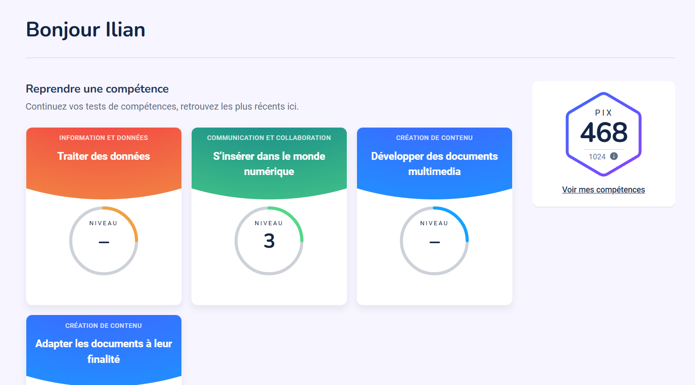

Certifications
Certification PIX
La certification PIX valide mes compétences numériques dans plusieurs domaines : communication, sécurité, création de contenu et traitement de l’information.

SecNumAcadémie – ANSSI
J’ai suivi et validé les quatre modules de la formation SecNumAcadémie de l’ANSSI, portant sur les bonnes pratiques en cybersécurité : authentification, sécurité Internet, poste de travail et nomadisme.
- Panorama de la SSI : 100%
- Sécurité de l’authentification : 100%
- Sécurité sur Internet : 100%
- Sécurité du poste de travail & nomadisme : 100%